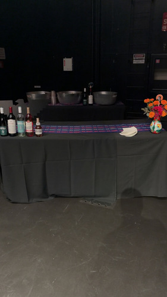
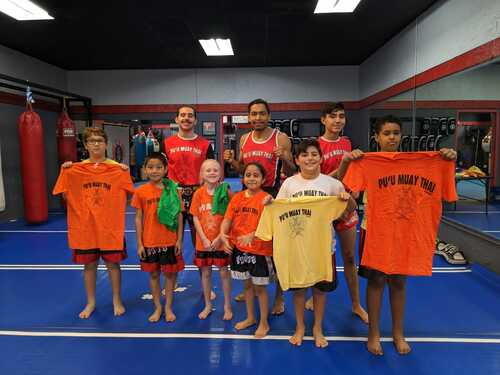
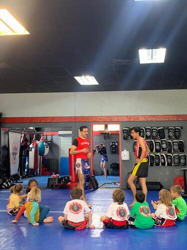

Tomas Cosio
Currently I am a 21yr old fourth year student enrolled at UC Riverside. I am majoring in Political Science and am also doing a minor in Spanish. I am expected to finish classes a quarter early so in the winter quarter in March of 2027. Originally I am from Ventura California which is about 2 hours away from Riverside. It is a coastal town which has many beaches. However, I do not live near the beach but it still is only about 15 minutes away from me. I am a proud product of an immigrant family on my dads side, they all are from Mexico and moved here in the 1970s. That is why I chose to minor in Spanish at school. I want to honor the sacrifices my grandparents as well as aunts, uncles, and my dad made so that I could have the opportunities I have. I grew up speaking Spanish as well as attending public schools that taught Spanish from kindergarten all the way to senior year of high school.
I chose to study political science because ever since I was young I have always been fascinated with political history and why certain governments throughout time acted the way that they did. All of my political science classes here at UCR have been very interesting and full of new information. My favorite political science courses have been Politics of Mexico, Race and Law Enforcement, and US-Latin American Relations. These have been some of my favorite because of the fact that it allows us to look at the US and realize the both positive and negative effects our foreign and domestic policy has had on people are learn from those mistakes and also realize how we can better ourselves as a country and understand why issues still persist today both domestically and internationally.
After graduating from UCR I am interested in pursuing a career in Law Enforcement, specifically with the Riverside Police Department. I feel the areas of political science and Spanish will greatly help with a career in law enforcement because political science helps those who study it the tools and experience of looking at causes and effects and coming up with evidence-based reasons for why things occur. I feel this translates well into law enforcement because the job requires a lot of investigating, hearing different sides and arguments and then taking all that into account and making a logical and fact based decision on the totality of the circumstances. The minor in spanish is a tool that will help me better communicate and understand those in the community that have a hard time speaking and understanding english, since we live in California which has a high hispanic population as well as our proximity to Mexico there are many residents whose first language is spanish. Moreover I have also had experience in the law enforcement field, specifically with an investigation unit. I worked an internship for two summers and two winter breaks with the Ventura County Sheriff's Office working in a unit with detectives learning and observing the day to day tasks of what a law enforcement officer does while also offering them assistance as well.
Experience
Muay Thai Instructor
• Lead youth, teens, and adult Muay Thai classes
• Operated front desk sales and administrative work
• Built relationships with students to help them reach their goals
Student Server/Student Lead
• Responsible for leading set up and clean up for catered events
• Communicate effectively with client to ensure satisfactory service
• Ensure team is aware of their tasks and work together to execute events
Student Worker III
• Effectively communicate with callers to understand their issues and transfer them to approriate people who can help
• Collaborated with detectives to help gather surveillance footage of crimes
• Help translate documents as well as speak to parties to help detectives with their assigned cases
Education
UC Riverside
Portfolio






